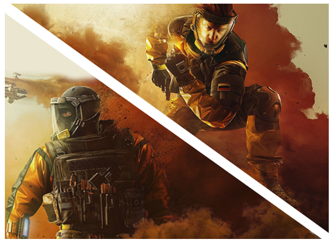

OPERAÇÃO CHIMERA

Em Operation Chimera, dois novos agentes se juntam à Equipe Rainbow para ajudar a conter uma misteriosa infecção de parasitas, que atingiu uma cidadezinha no estado norte-americano do Novo México. Para proteger o perímetro, a Six selecionou os mais qualificados especialistas em risco biológico do mundo: Lion e Finka.
A Zona de Quarentena é a única barreira que mantém essa epidemia contida, mas não vai durar. Se o parasita se espalhar, as mortes resultantes alcançariam números jamais vistos.
Outbreak desafia você a assumir a responsabilidade. Vá ao ataque e aventure-se dentro da Zona de Quarentena para conter a epidemia que ameaça se espalhar pela América do Norte. Explore nossos três novos mapas com seu esquadrão e sobreviva a hordas de inimigos, para identificar a fonte do parasita.